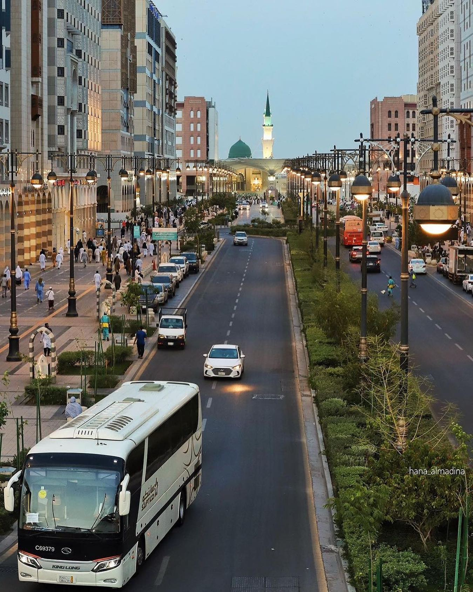

Mymensingh, a city steeped in history and culture,
lies in the heart of Bangladesh, cradled between the
Brahmaputra and Old Brahmaputra rivers. This vibrant
urban center serves as a melting pot of tradition and
modernity, where age-old customs blend seamlessly with
contemporary life.
Mymensingh, a city steeped in history and culture,
lies in the heart of Bangladesh, cradled between the
Brahmaputra and Old Brahmaputra rivers. This vibrant
urban center serves as a melting pot of tradition and
modernity, where age-old customs blend seamlessly with
contemporary life.
Mymensingh, a city steeped in history and culture,
lies in the heart of Bangladesh, cradled between the
Brahmaputra and Old Brahmaputra rivers. This vibrant
urban center serves as a melting pot of tradition and
modernity, where age-old customs blend seamlessly with
contemporary life.
Division1
Division2
Division3
Division4
Division5
Division6

The holly Madina
Madina is the second holly place for the muslims all over the world.
The shrine of prophet Muhammad(sw) is placed in Madina.The gratest
mosque Masjid-a-nawabi is also here.